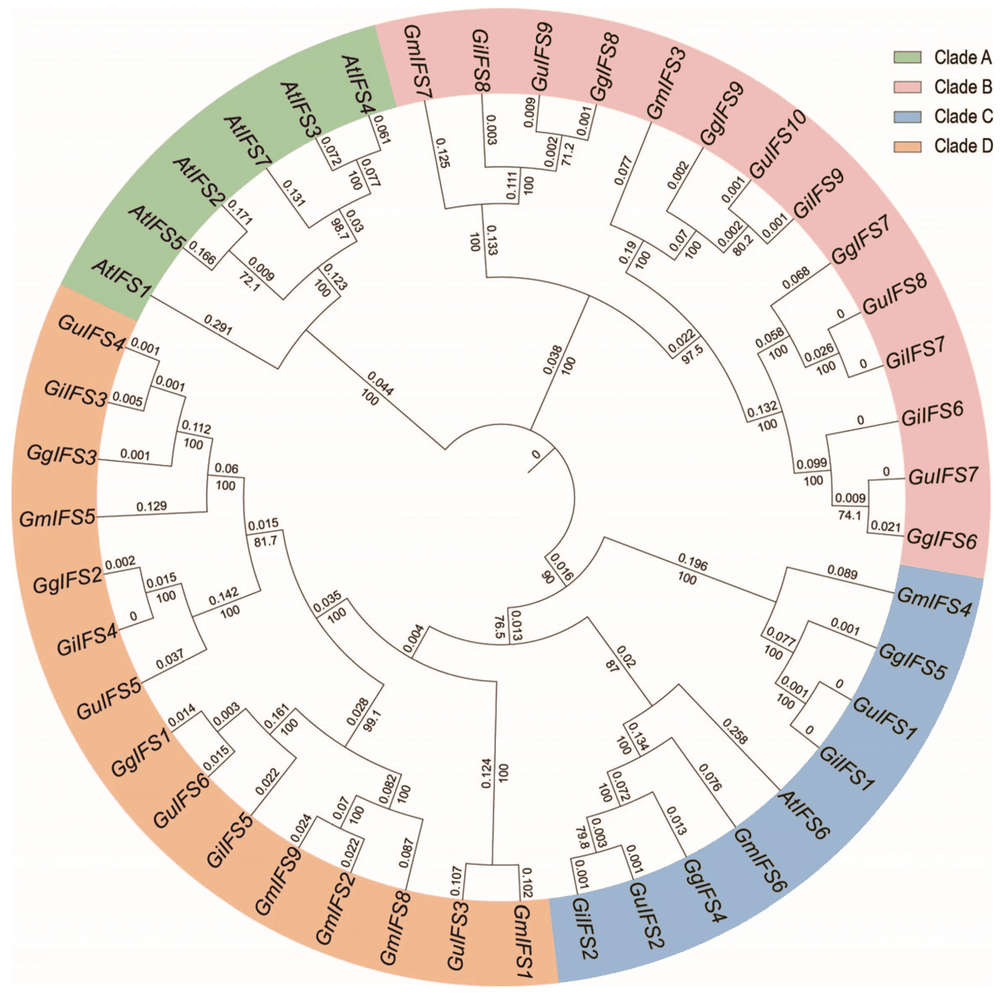
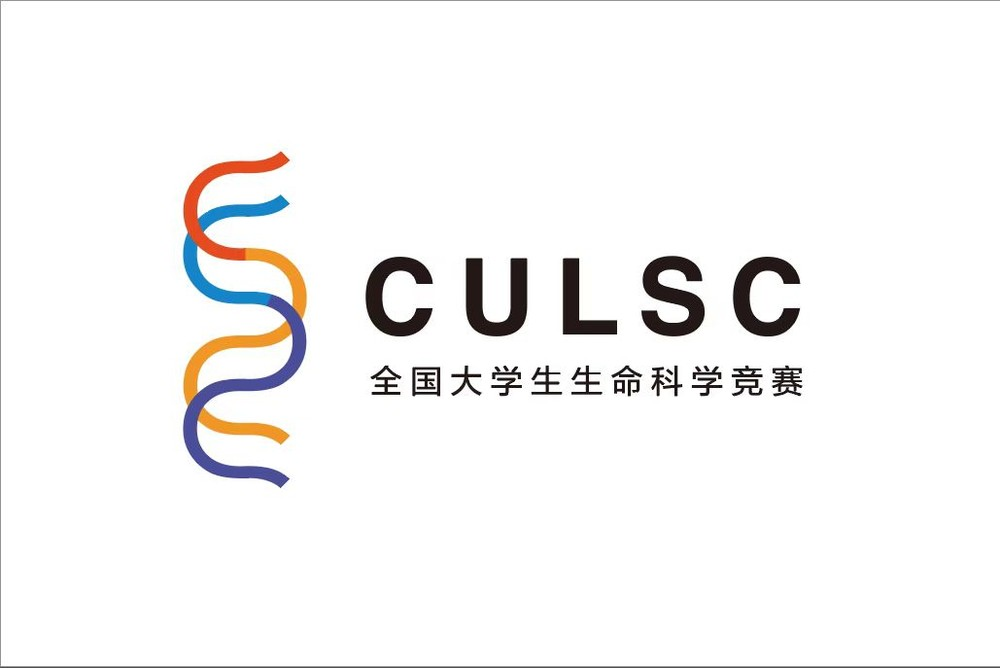
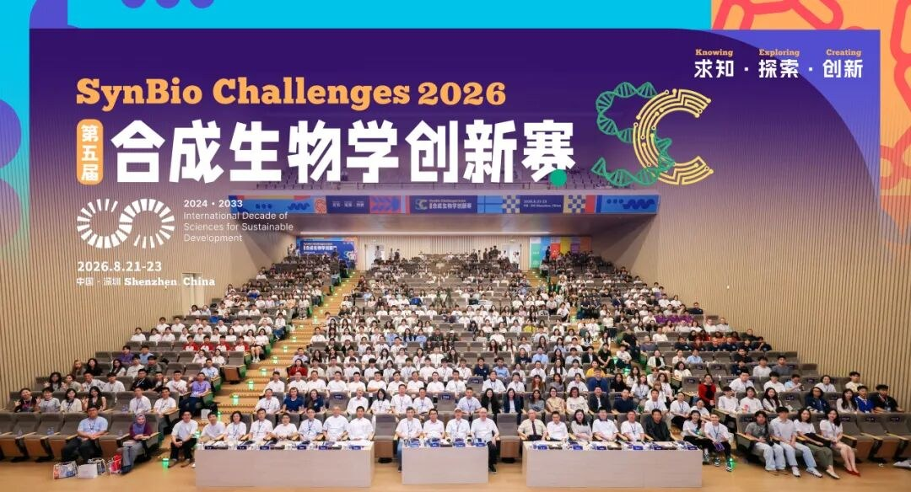

Sheng Kuang 「匡盛」
|
|
| CV |
Email |
Google Scholar |
| Github |
|
I am an undergraduate student at Shihezi University majoring in Biological Sciences at the College of Life Sciences. I am currently a junior (Class of 2028) working toward my B.S. degree.
My research interests lie at the intersection of molecular biology, bioinformatics, and synthetic biology. I try to build AI-driven computational models to decipher genomic codes, mine large-scale omics data, and design programmable biological systems.
I am fortunate to be advised by Prof. Shandang Shi.
Email: shengkuang2005 [AT] gmail.com
|
- [08/2026] Won Silver Medal (Team Leader) in the Protein Design Track at the 5th SynBio Challenges, Shenzhen, China!
- [08/2026] Awarded Third Prize in the Chinese Collegiate Computing Competition (4C).
- [07/2026] Our multi-omics study of transposable elements in Glycyrrhiza won Third Prize in the National Undergraduate Life Science Competition (Xinjiang Division).
- [05/2026] Awarded Third Prize in the National English Competition for College Students (NECCS), Xinjiang Division.
- [12/2025] Awarded First Prize in the National Cotton and Hemp Innovation and Entrepreneurship Competition.
- [10/2025] Our paper on the IFS gene family in Glycyrrhiza glabra was published in Int. J. Mol. Sci.!
|
|

|
Genome-Wide Identification and Characterization of IFS Gene Family, and Analysis of GgARF4-GgIFS9 Regulatory Module in Glycyrrhiza glabra
Qing Xu, Xiangxiang Hu, Shiyan Cui, Jianguo Gao, Lijie Zeng, Ziqi Li, Sheng Kuang, Xifeng Chen, Quanliang Xie, Zihan Li, Hongbin Li, Fei Wang, Shandang Shi, Shuangquan Xie
Int. J. Mol. Sci. 2025, 26, 10435
webpage |
pdf |
abstract |
bibtex |
DOI
Isoflavone synthase (IFS) is the key enzyme in isoflavonoid biosynthesis. In this study, we identified 10, 9 and 9 IFS genes in G. uralensis, G. inflata and G. glabra, respectively. Phylogenetic analysis classified these genes into four distinct clades. Using yeast one-hybrid (Y1H) screening, dual-luciferase assays and EMSA, we revealed that auxin response factor 4 (GgARF4) directly binds to the isoflavone synthase 9 (GgIFS9) promoter and activates its expression. RNA-seq and qRT-PCR revealed that GgIFS9 was strongly induced by IAA. GUS assays confirmed that IAA activates the expression of the GgIFS9 promoter in Nicotiana tabacum.
@article{xu2025ifs,
title={Genome-Wide Identification and Characterization of Isoflavone Synthase (IFS) Gene Family, and Analysis of GgARF4-GgIFS9 Regulatory Module in Glycyrrhiza glabra},
author={Xu, Qing and Hu, Xiangxiang and Cui, Shiyan and Gao, Jianguo and Zeng, Lijie and Li, Ziqi and Kuang, Sheng and Chen, Xifeng and Xie, Quanliang and Li, Zihan and Li, Hongbin and Wang, Fei and Shi, Shandang and Xie, Shuangquan},
journal={International Journal of Molecular Sciences},
volume={26},
pages={10435},
year={2025},
publisher={MDPI},
doi={10.3390/ijms262110435}
}
|
|

|
Multi-omics Analysis of Transposable Element Characteristics and Their Roles in Salt and Drought Stress Responses in Glycyrrhiza
Sheng Kuang (Team Leader), Zhuo Liu, Guancheng Wu, Haiqi Chen, Zhining Ma, Shandang Shi (Advisor)
National Undergraduate Life Science Competition (Xinjiang Division), Third Prize
competition website
|
|

|
Protein Design for SynBio Challenges
Sheng Kuang (Team Leader), Zhuo Liu, Rui Tang, Chao Jiang, Mengqian Long, Qing Xu, Zhonghui Li, Guancheng Wu, Mingchi Wang, Tong Liu, Liwei Pan, Chongfei Liu, Baoming Sun, Yingchun Zhao, Shandang Shi (Advisor)
5th National Synthetic Biology Innovation Competition (SynBio Challenges 2026), Protein Design Track
competition website
|
- Silver Medal (Team Leader), 5th SynBio Challenges — Protein Design Track, Shenzhen, China, 2026
- Third Prize, National English Competition for College Students (NECCS), Xinjiang Division, 2026
- First Prize, National Cotton and Hemp Innovation and Entrepreneurship Competition, 2025
- Third Prize, Chinese Collegiate Computing Competition (4C), 2026
- Third Prize, National Undergraduate Life Science Competition (Xinjiang Division), 2026 (Provincial)
|
|
{kind=link}